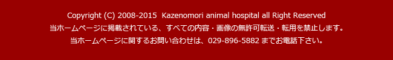

Topics
毎月、歯科診療の内容を中心にトピックスを更新致しております。これまでのトピックスについては、項目をクリックしてご覧下さい。
●歯周病 ●口内炎 ●歯牙修復 ●その他の歯の病気 ●トピック
毎月、歯科診療の内容を中心にトピックスを更新致しております。これまでのトピックスについては、項目をクリックしてご覧下さい。
●歯周病 ●口内炎 ●歯牙修復 ●その他の歯の病気 ●トピック
 歯並び
歯並び
歯並びや咬み合わせ（咬合）について、イヌネコで大きな問題になることは、あまりありません。ヒトと違って、上下の歯をすりあわせるような咀嚼をすることがなく、本人が、咬みづらいといって訴えることもないからでしょう。
イヌネコでは、主に口腔内の２カ所において、噛み合わせの調整をします。１つは、上下の犬歯。もう１つは、上顎第４前臼歯、第１後臼歯と下顎だい１後臼歯です。
イヌでは、生まれて、間もなく乳歯が生え、生後6ヶ月ごろまでに永久歯に生え変わります。この乳歯から永久歯に生え変わる時、順序よく乳歯が抜けるのですが、そのあいだ咀嚼するたびに、この２カ所の部分で、歯並びが調整されます。これは、永久歯が生えそろったあとも、顎の成長が止まるまで保たれるため、顎の成長に伴い、正常な位置まで永久歯が移動することができます。
乳歯が、適切な時期に抜けなかったり、上下の顎のバランスが生まれつき悪いと、不正咬合とよばれる噛み合わせの異常がおきてしまいます。
抜けないで残ってしまった乳歯は、適切な時期に抜歯し、永久歯を数ミリ移動して矯正することで、正常な咬み合わせを整えます。
写真は、乳歯残存による不正咬合の患者さんの口腔内写真です。
残存した乳歯を抜歯、永久歯を誘導して、矯正しました。

